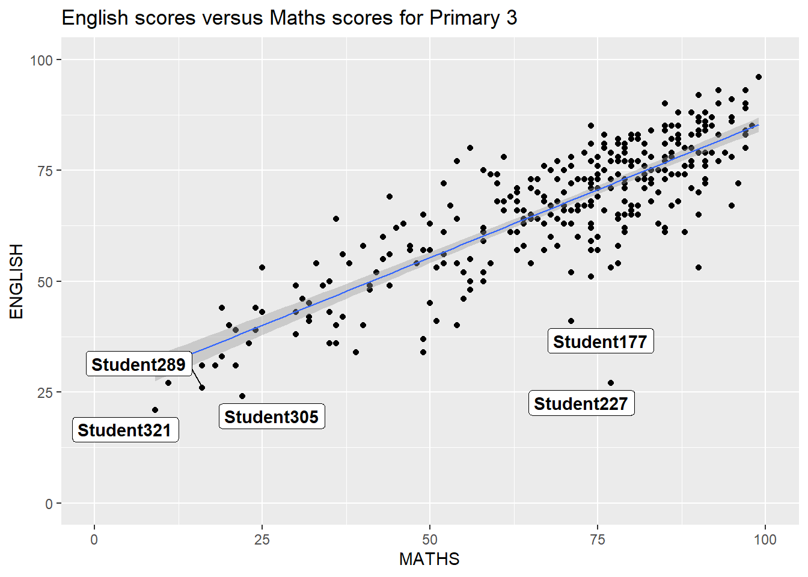
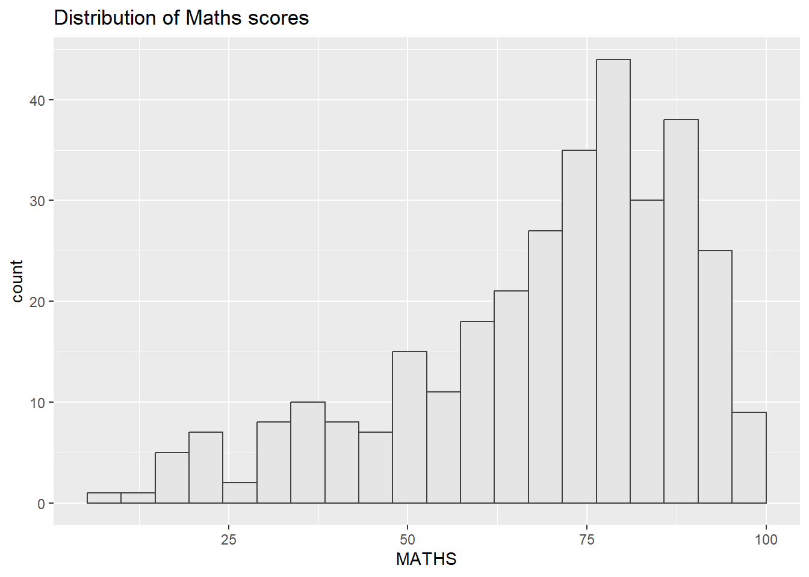
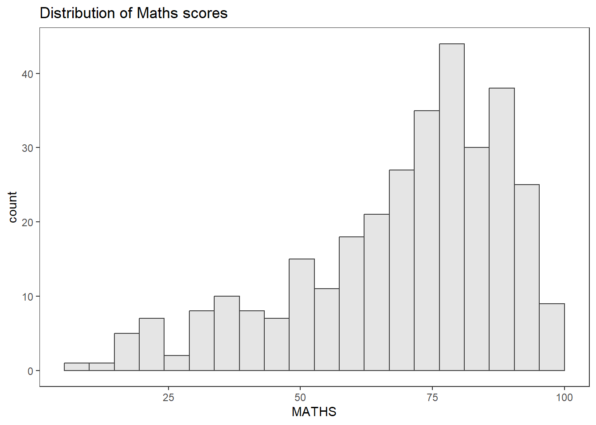
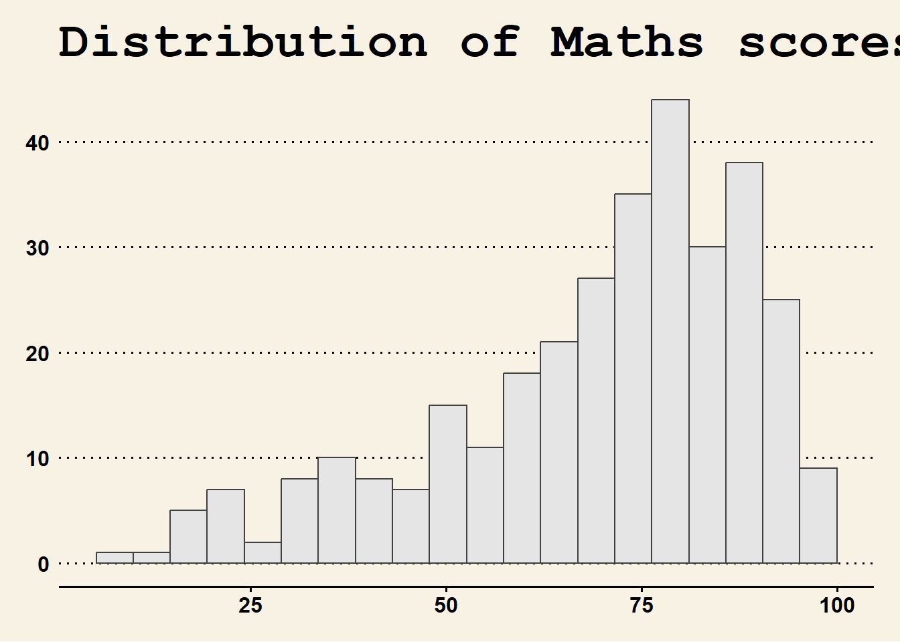
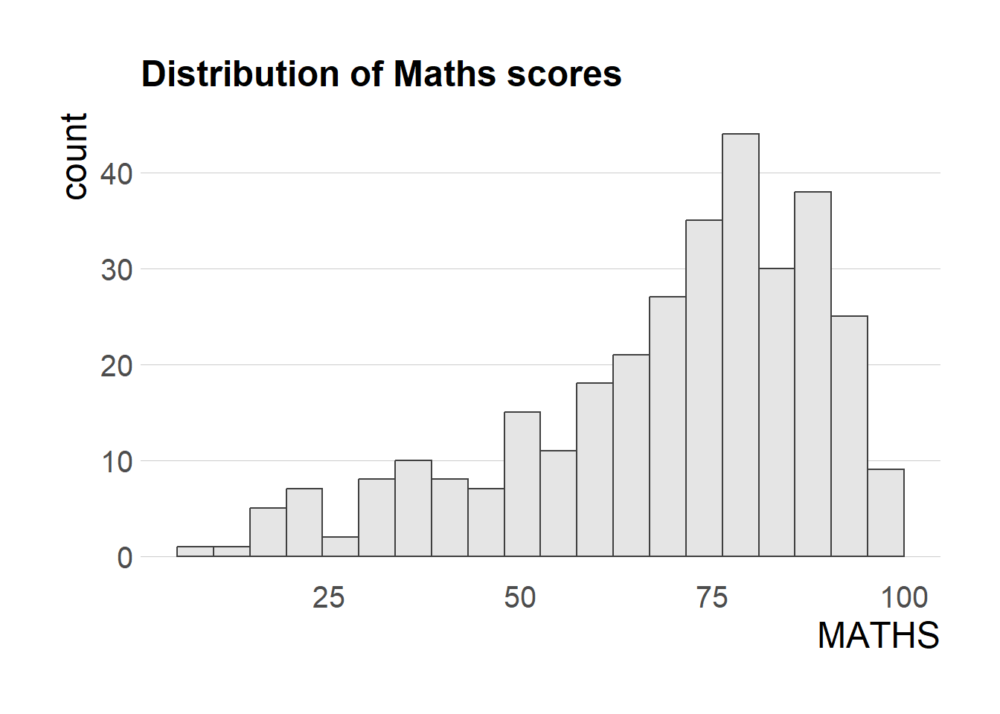

pacman::p_load(ggrepel, patchwork,
ggthemes, hrbrthemes,
tidyverse) Hands-On Ex 2
Getting Started
This hands-on exercise is on Beyond ggplot2 Fundamentals.
Zhixuan’s personal learning outcomes
- Learn ggplot2 extensions
- Understanding how it can be linked to work
Installing and loading the required libraries
In this exercise, beside tidyverse, four R packages will be used. They are:
ggrepel: an R package provides geoms for ggplot2 to repel overlapping text labels.
ggthemes: an R package provides some extra themes, geoms, and scales for ‘ggplot2’.
hrbrthemes: an R package provides typography-centric themes and theme components for ggplot2.
patchwork: an R package for preparing composite figure created using ggplot2.
Code chunk below will be used to check if these packages have been installed and also will load them onto your working R environment.
Importing data
The code chunk below imports exam_data.csv into R environment by using read_csv() function of readr package. readr is one of the tidyverse package.
exam_data <- read_csv("data/Exam_data.csv")Rows: 322 Columns: 7
── Column specification ────────────────────────────────────────────────────────
Delimiter: ","
chr (4): ID, CLASS, GENDER, RACE
dbl (3): ENGLISH, MATHS, SCIENCE
ℹ Use `spec()` to retrieve the full column specification for this data.
ℹ Specify the column types or set `show_col_types = FALSE` to quiet this message.Beyond ggplot2 Annotation: ggrepel
Warning: Using `size` aesthetic for lines was deprecated in ggplot2 3.4.0.
ℹ Please use `linewidth` instead.
ggplot(data=exam_data,
aes(x= MATHS,
y=ENGLISH)) +
geom_point() +
geom_smooth(method=lm,
size=0.5) +
geom_label(aes(label = ID),
hjust = .5,
vjust = -.5) +
coord_cartesian(xlim=c(0,100),
ylim=c(0,100)) +
ggtitle("English scores versus Maths scores for Primary 3")Working with ggrepel
ggplot(data=exam_data,
aes(x= MATHS,
y=ENGLISH)) +
geom_point() +
geom_smooth(method=lm,
size=0.5) +
geom_label_repel(aes(label = ID),
fontface = "bold") +
coord_cartesian(xlim=c(0,100),
ylim=c(0,100)) +
ggtitle("English scores versus Maths scores for Primary 3")`geom_smooth()` using formula = 'y ~ x'Warning: ggrepel: 317 unlabeled data points (too many overlaps). Consider
increasing max.overlaps
Beyond ggplot2 Themes
ggplot(data=exam_data,
aes(x = MATHS)) +
geom_histogram(bins=20,
boundary = 100,
color="grey25",
fill="grey90") +
theme_gray() +
ggtitle("Distribution of Maths scores") 
Working with ggtheme package
ggplot(data=exam_data,
aes(x = MATHS)) +
geom_histogram(bins=20,
boundary = 100,
color="grey25",
fill="grey90") +
ggtitle("Distribution of Maths scores") +
theme_economist()
Working with hrbthems package
ggplot(data=exam_data,
aes(x = MATHS)) +
geom_histogram(bins=20,
boundary = 100,
color="grey25",
fill="grey90") +
ggtitle("Distribution of Maths scores") +
theme_ipsum()
ggplot(data=exam_data,
aes(x = MATHS)) +
geom_histogram(bins=20,
boundary = 100,
color="grey25",
fill="grey90") +
ggtitle("Distribution of Maths scores") +
theme_ipsum(axis_title_size = 18,
base_size = 15,
grid = "Y")
Beyond Single Graph
p1 <- ggplot(data=exam_data,
aes(x = MATHS)) +
geom_histogram(bins=20,
boundary = 100,
color="grey25",
fill="grey90") +
coord_cartesian(xlim=c(0,100)) +
ggtitle("Distribution of Maths scores")p2 <- ggplot(data=exam_data,
aes(x = ENGLISH)) +
geom_histogram(bins=20,
boundary = 100,
color="grey25",
fill="grey90") +
coord_cartesian(xlim=c(0,100)) +
ggtitle("Distribution of English scores")I draw a scatterplot for English score versus Maths score by as shown below
p3 <- ggplot(data=exam_data,
aes(x= MATHS,
y=ENGLISH)) +
geom_point() +
geom_smooth(method=lm,
size=0.5) +
coord_cartesian(xlim=c(0,100),
ylim=c(0,100)) +
ggtitle("English scores versus Maths scores for Primary 3")Combining two ggplot2 graphs

p1 + p2Combining three ggplot2 graphs
`geom_smooth()` using formula = 'y ~ x'
(p1 / p2) | p3Creating a composite figure with tag
((p1 / p2) | p3) +
plot_annotation(tag_levels = 'I')`geom_smooth()` using formula = 'y ~ x'
Creating figure with insert
p3 + inset_element(p2,
left = 0.02,
bottom = 0.7,
right = 0.5,
top = 1)`geom_smooth()` using formula = 'y ~ x'
Creating a composite figure by using patchwork and ggtheme
patchwork <- (p1 / p2) | p3
patchwork & theme_economist()`geom_smooth()` using formula = 'y ~ x'